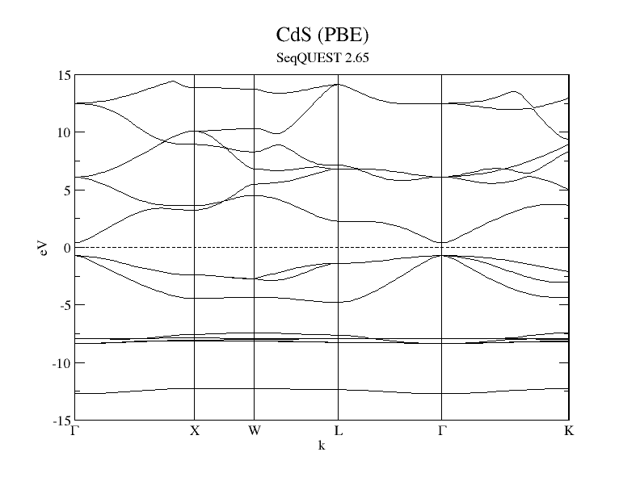

| SeqQuest Home |
User Guides |
Input Manual |
Run phase Manual |
Bands Manual |
|---|
At the conclusion of the run, the code generates two files needed to plot the band structure:

output level 4 do setup do iters no force no relax do post no cell do bands setup data notes CdS (Fd-3m)(sg 227) FINAL RELAXED CELL ENERGY = -113.1589305653 end_notes functional PBE dimension of system (0=cluster ... 3=bulk) 3 coordinates lattice primitive lattice vectors 0.0000000000 5.6252238919 5.6252238919 5.6252238919 0.0000000000 5.6252238919 5.6252238919 5.6252238919 0.0000000000 grid dimensions 36 36 36 atom types 2 atom file /home/acpineda/QUEST/atmlib-27jun07/pbe/Cd.atm atom file /home/acpineda/QUEST/atmlib-27jun07/pbe/S.atm number of atoms in unit cell 2 atom, type, position vector 1 1 0.00000000000 0.00000000000 0.00000000000 2 2 0.25000000000 0.25000000000 0.25000000000 kgrid 8 8 8 symops - for symmetry group # 227 3 definitions of symmetry operations -4 0.00000 0.00000 1.00000 0.00000 0.00000 0.00000 3 1.00000 1.00000 1.00000 0.00000 0.00000 0.00000 -2 1.00000 1.00000 0.00000 0.00000 0.00000 0.00000 end setup phase data run phase input data cutfrc - extends cutoffs for force calculations, to get better stress 5.d-2 convergence criterion 0.000010 geometry parameters gblend 0.42 gsteps 50 gconv - max force convergence criterion 0.0001 end geometry data bandstructure input bravais lattice fc2 nbranch 5 symbol labels GX XW WL LG GK end bandstructure input end of run phase dataReturn to Top or Band structure manual or Run phase manual or Input Manual or User Guides or SeqQuest Home